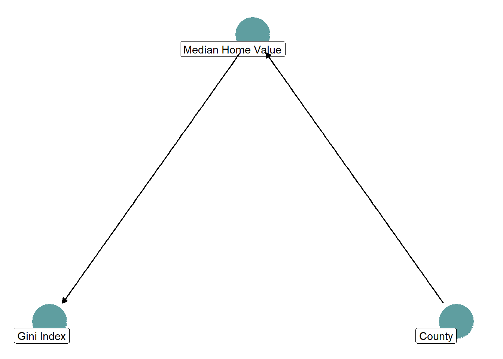

Packages Used
pacman::p_load(
"tidyverse",
"tidycensus",
"brms",
"broom",
"MetBrewer",
"ggdag",
"dagitty"
)
options(mc.cores = parallel::detectCores())pacman::p_load(
"tidyverse",
"tidycensus",
"brms",
"broom",
"MetBrewer",
"ggdag",
"dagitty"
)
options(mc.cores = parallel::detectCores())Does the median home value have an impact on the income inequality in a Census tract?
The Gini Index is a measure of income inequality in a region. Lower values = less inequality, higher values = more inequality.
get_ca_tracts_acs <- function(year_val) {
acs_year <- get_acs(
geography = "tract",
variables = c("gini_index" = "B19083_001",
"median_home_val" = "B25077_001"),
state = "CA",
year = year_val,
survey = "acs5",
output = "wide",
keep_geo_vars = TRUE
) |>
mutate(NAME = str_remove(NAME, " County; California"),
NAME = str_remove(NAME, "^.*?;\\s*"),
NAME = str_remove(NAME, " County, California"),
NAME = str_remove(NAME, "^.*?,\\s*"),
median_home_val100k = median_home_valE / 100000) |>
select(county = NAME, GEOID,
gini_index = gini_indexE,
median_home_val = median_home_valE,
median_home_val100k)
return(acs_year)
}
ca_tracts <- get_ca_tracts_acs(2022)Loading and cleaning California tract data from the 5-year ACS.
ca_3 <- ca_tracts |>
filter(county %in% c("San Benito", "Mono", "Humboldt"))First we will take a look at the data for three counties and inspect whether there might be a relationship between median home values and the Gini Index.
ca_3 |>
ggplot(aes(x = median_home_val, y = gini_index)) +
geom_point(color = "maroon4") +
geom_smooth(method = "lm", se = FALSE, color = "maroon4") +
scale_x_continuous(labels = scales::dollar) +
labs(x = "Median Home Value", y = "Gini Index",
title = "Pooled County Relationship") +
theme_bw() +
theme(legend.position = "bottom")ca_3 |>
ggplot(aes(x = median_home_val, y = gini_index, color = county)) +
geom_point() +
geom_smooth(method = "lm", se = FALSE) +
scale_x_continuous(labels = scales::dollar) +
scale_color_manual(values = met.brewer("Cross", 3)) +
labs(x = "Median Home Value", y = "Gini Index",
title = "Individual County Relationships") +
theme_bw() +
theme(legend.position = "bottom", legend.title = element_blank())Oh no! The relationship between the two variables is reversed depending on whether we pool all the data or whether we treat each county individually.
The only way to reconcile this “paradox” is to draw the DAG and think about how each variable in the system influences the others.
dagify(
y ~ x,
x ~ z,
labels = c(y = "Gini Index",
x = "Median Home Value",
z = "County"),
coords = list(
x = c(y = 0, x = 1, z = 2),
y = c(y = 0, x = 1, z = 0)
)
) |>
ggplot(aes(x = x, y = y, xend = xend, yend = yend)) +
geom_dag_point(color = "cadetblue") +
geom_dag_label_repel(aes(label = label), colour = "black", show.legend = FALSE) +
geom_dag_edges_arc(curvature = 0) +
theme_dag()
dagify(
y ~ x + z,
x ~ z,
labels = c(y = "Gini Index",
x = "Median Home Value",
z = "County"),
coords = list(
x = c(y = 0, x = 1, z = 2),
y = c(y = 0, x = 1, z = 0)
)
) |>
ggplot(aes(x = x, y = y, xend = xend, yend = yend)) +
geom_dag_point(color = "cadetblue") +
geom_dag_label_repel(aes(label = label), colour = "black", show.legend = FALSE) +
geom_dag_edges_arc(curvature = 0) +
theme_dag()
The decision to include county fixed effects is based on which DAG we think is true.
lm(gini_index ~ median_home_val100k, data = ca_3) |>
summary()
Call:
lm(formula = gini_index ~ median_home_val100k, data = ca_3)
Residuals:
Min 1Q Median 3Q Max
-0.131268 -0.053113 -0.001922 0.035557 0.141040
Coefficients:
Estimate Std. Error t value Pr(>|t|)
(Intercept) 0.466640 0.026572 17.561 <2e-16 ***
median_home_val100k -0.006218 0.005150 -1.207 0.233
---
Signif. codes: 0 '***' 0.001 '**' 0.01 '*' 0.05 '.' 0.1 ' ' 1
Residual standard error: 0.06289 on 49 degrees of freedom
(1 observation deleted due to missingness)
Multiple R-squared: 0.02889, Adjusted R-squared: 0.009076
F-statistic: 1.458 on 1 and 49 DF, p-value: 0.2331lm(gini_index ~ 0 + median_home_val100k + county, data = ca_3) |>
summary()
Call:
lm(formula = gini_index ~ 0 + median_home_val100k + county, data = ca_3)
Residuals:
Min 1Q Median 3Q Max
-0.10196 -0.02328 -0.00255 0.02534 0.14256
Coefficients:
Estimate Std. Error t value Pr(>|t|)
median_home_val100k 0.021362 0.007089 3.014 0.00415 **
countyHumboldt 0.372062 0.029690 12.532 < 2e-16 ***
countyMono 0.280032 0.045084 6.211 1.29e-07 ***
countySan Benito 0.234057 0.053676 4.361 7.03e-05 ***
---
Signif. codes: 0 '***' 0.001 '**' 0.01 '*' 0.05 '.' 0.1 ' ' 1
Residual standard error: 0.0516 on 47 degrees of freedom
(1 observation deleted due to missingness)
Multiple R-squared: 0.9874, Adjusted R-squared: 0.9863
F-statistic: 918.8 on 4 and 47 DF, p-value: < 2.2e-16Calculating county-level Gini Index averages from tracts.
raw_avgs <- ca_tracts |>
summarise(estimate = mean(gini_index, na.rm = TRUE),
conf.low = NA,
conf.high = NA,
.by = county) |>
mutate(method = "County Average")Calculating the statewide average.
statewide_avg <- mean(ca_tracts$gini_index, na.rm = TRUE)We can also find county-level Gini Index averages using fixed effects in a linear regression.
fe_model <- lm(
gini_index ~ 0 + county,
data = ca_tracts
)
fe_ests <- tidy(fe_model, conf.int = TRUE) |>
mutate(county = str_remove(term, "county"),
county = forcats::fct_reorder(county, estimate),
method = "Fixed Effects Model") |>
select(method, county, estimate, conf.low, conf.high)rbind(fe_ests, raw_avgs) |>
ggplot(aes(x = estimate, y = county, color = method)) +
geom_pointrange(aes(xmin = conf.low, xmax = conf.high)) +
geom_vline(xintercept = statewide_avg, linetype = "dashed") +
labs(y = "", x = "Gini Index Estimate") +
scale_color_manual(values = c(met.brewer("Isfahan1")[1],
met.brewer("Isfahan1")[2])) +
facet_wrap(~method, nrow = 1) +
theme_bw() +
theme(legend.position = "none")Building a county-level multilevel model is similar to using county-level fixed effects. But Bayesian multilevel models allow information to be shared between counties when estimating what a county’s likely Gini Index is. This acts to shrink estimates from small, noisy counties towards the statewide mean.
multilevel_model <- brm(
gini_index ~ 1 + (1 | county),
data = ca_tracts,
cores = 4,
chains = 4,
threads = threading(2),
backend = "cmdstanr",
silent = 2
)
multilevel_ests <- coef(multilevel_model)$county |>
as_tibble(rownames = "county") |>
mutate(method = "Multilevel Model") |>
select(method, county, estimate = Estimate.Intercept,
conf.low = Q2.5.Intercept, conf.high = Q97.5.Intercept)rbind(fe_ests, multilevel_ests) |>
ggplot(aes(x = estimate, y = county, color = method)) +
geom_pointrange(aes(xmin = conf.low, xmax = conf.high)) +
geom_vline(xintercept = statewide_avg, linetype = "dashed") +
scale_color_manual(values = c(met.brewer("Isfahan1")[2],
met.brewer("Isfahan1")[6])) +
labs(y = "", x = "Gini Index Estimate") +
theme_bw() +
facet_wrap(~ method) +
theme(legend.position = "bottom", legend.title = element_blank())